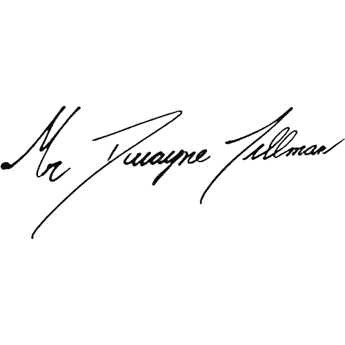

Hermetic Labs Ltd is committed to achieving Net Zero emissions by 2050.
Baseline year: 2025
Hermetic Labs Ltd is a newly incorporated UK technology consultancy specialising in artificial intelligence advisory services for healthcare organisations. The company operates on a fully remote, local-first model with no physical office premises, company vehicles, or on-site manufacturing facilities. All AI inference and data processing is performed on local consumer-grade hardware, eliminating the need for cloud-based GPU compute infrastructure.
As a sole-director company with no employees, the operational carbon footprint is minimal. Emissions are estimated using recognised conversion factors published by the UK Government (DEFRA/BEIS).
| Emissions Source | Total (tCO2e) |
|---|---|
| Scope 1 — Direct emissions (company vehicles, natural gas, refrigerants) | 0 |
| Scope 2 — Indirect emissions (purchased electricity) | 0.2 |
| Scope 3 — Upstream transportation and distribution | 0 |
| Scope 3 — Waste generated in operations | 0 |
| Scope 3 — Business travel | 0.1 |
| Scope 3 — Employee commuting | 0 |
| Scope 3 — Downstream transportation and distribution | 0 |
| Total Emissions | 0.3 |
Hermetic Labs Ltd commits to reducing its total carbon emissions in line with achieving Net Zero by 2050. Given the company's already minimal carbon footprint, the primary strategy is to maintain near-zero emissions as the business scales, rather than achieving large percentage reductions from an already negligible baseline.
| Year | Target (tCO2e) |
|---|---|
| 2025 (Baseline) | 0.3 |
| 2027 | 0.3 |
| 2030 | 0.2 |
| 2035 | 0.1 |
| 2050 | 0 (Net Zero) |
This Carbon Reduction Plan has been completed in accordance with PPN 06/21 and the associated guidance, and reporting standard for Carbon Reduction Plans.
Emissions have been reported and recorded in accordance with the published reporting standard for Carbon Reduction Plans and the GHG Reporting Protocol corporate standard, using the 2025 UK Government GHG Conversion Factors for Company Reporting.
Scope 1 and Scope 2 emissions have been reported in accordance with the SECR requirements, and the required subset of Scope 3 emissions have been reported in accordance with the published reporting standard for Carbon Reduction Plans. This Carbon Reduction Plan has been reviewed and signed off by the board of directors (or equivalent management body).
